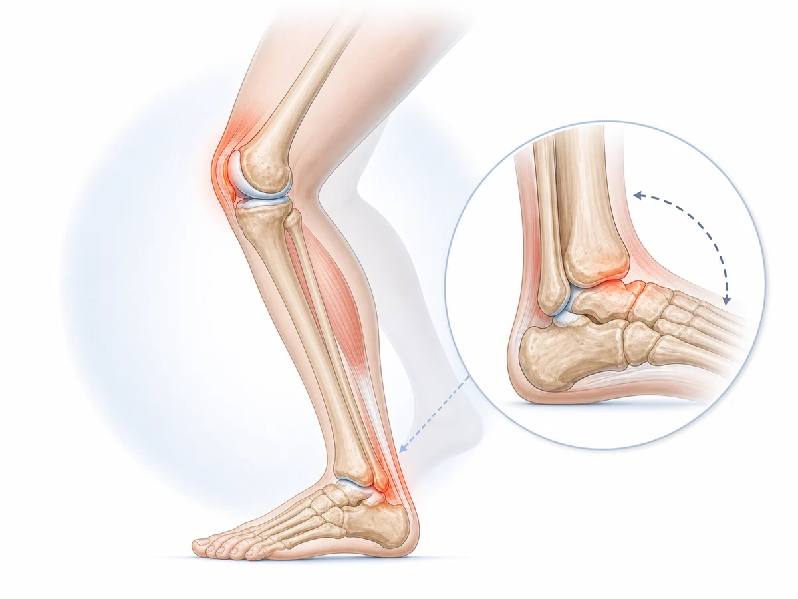

01
足首が前へ曲がりにくい
階段やしゃがみ込みで膝が必要以上に前や内側へ動く場合があります。
足首が硬い、しゃがみにくい、歩くと膝が痛い方へ。足首・足裏・股関節の連動から、膝へ負担が集まる理由を確認します。
階段やしゃがみ込みでは、足首が前へ曲がりながら身体の重心を移動させます。
足首が動きにくいと、かかとが浮く、足が外へ向く、膝が内側へ入るなどの補い方が起き、膝へ負担が集まることがあります。
ただし、足首だけが唯一の原因とは限りません。股関節や体幹を含め、動作全体を確認することが大切です。

階段やしゃがみ込みで膝が必要以上に前や内側へ動く場合があります。
かかとや親指側へ均等に体重を乗せにくいと、膝の向きも変わりやすくなります。
足首と股関節の両方が使いにくいと、膝が動きを補う量が増えます。
硬い靴や坂道などによって、足元から膝への負担が増えることがあります。
足首が前へ曲がりにくい
足や膝の向きがずれる
膝が動きを補いすぎる
階段や歩行で膝が痛む
これは足首の硬さと膝痛が起きる流れの一例です。原因や状態は一人ひとり異なるため、実際には腫れや痛む場所、関節の動き、筋肉の働き、日常動作などを確認する必要があります。
張っている膝まわりをほぐすと、一時的に軽く感じることがあります。
しかし、足首の動きや足裏の接地が変わらないと、歩行や階段で再び膝が動きを補い、痛みが戻る場合があります。
大切なのは、痛む場所だけでなく負担が集まる動作まで確認することです。
足首や膝の外傷、急な腫れを伴う場合は、医療機関での確認を優先してください。
同じ足首の硬さと膝痛でも、困る動作や身体の状態は人によって異なります。
柏市の整体院ひざこぞうでは、痛む場所だけを施術するのではなく、姿勢、関節の動き、筋肉の働き、日常動作まで確認します。
カウンセリングと身体のチェックをもとに、現在の状態と施術方針を分かりやすくご説明します。

膝だけを施術するのではなく、足首・足裏・股関節の連動を確認し、膝が動きを補いすぎない身体の使い方を目指します。
動かす｜可動性
膝に無理をかけない範囲で、足首と股関節の動きを整えます。
支える｜安定性
足裏で安定して立ち、お尻と太ももで膝を支える練習を行います。
使う｜動作改善
足首・膝・股関節が一緒に動くよう、日常動作を無理のない範囲で確認します。
痛みや腫れが出る動作、医療機関で言われたことなどをLINEで送っていただければ、来院前のご相談も可能です。
通院頻度は、痛みや腫れの強さ、続いている期間、生活環境、目指す状態によって異なります。
初回に身体の状態を確認したうえで、必要な頻度と期間の目安をご説明します。
無理に通院を勧めることはありませんので、ご希望や生活状況も含めてご相談ください。
写真は左右にスライドできます


予約前に特に多い不安だけを、短くまとめました。